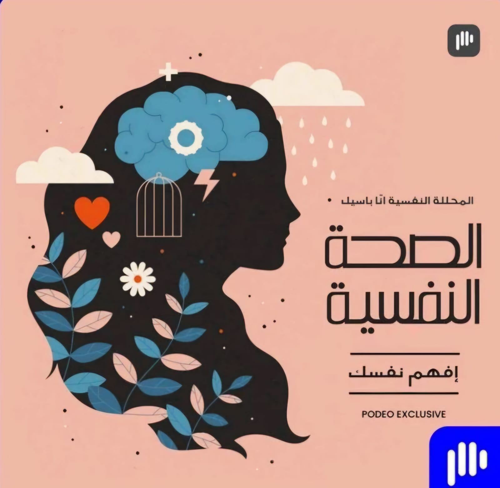

كيف تحافظ على صحتك النفسية
نصائح وخبرات تساعدك على التغلب على التوتر والقلق.
استمع الآن
تطوير الذات في بيئة العمل
طرق لتعزيز الإنتاجية والتعامل مع الضغوط اليومية.
استمع الآن

أساسيات العناية بالصحة النفسية
خطوات بسيطة لتحسين حالتك المزاجية وتقليل التوتر.
استمع الآن

التعامل مع القلق في الحياة اليومية
طرق عملية للتغلب على القلق وتحقيق التوازن.
استمع الآن

النوم الصحي وأثره على الصحة النفسية
كيفية تحسين جودة نومك لدعم صحتك النفسية.
استمع الآن

أهمية الحديث عن مشاعرك
كيف يساعدك التعبير عن مشاعرك في تحسين صحتك النفسية.
استمع الآن

التغذية وتأثيرها على الصحة النفسية
الأطعمة التي تساعد في تعزيز حالتك المزاجية.
استمع الآن
كيفية التعامل مع الضغط النفسي في العمل
استراتيجيات فعالة للتعامل مع الضغوط اليومية.
استمع الآن

العلاقات الاجتماعية والصحة النفسية
دور العلاقات الجيدة في تحسين صحتك النفسية.
استمع الآن

التأمل وأثره على الصحة النفسية
كيف يمكن للتأمل أن يقلل من التوتر ويعزز الهدوء الداخلي.
استمع الآن
أسرار التفكير الإيجابي
اكتشف كيف يؤثر التفكير الإيجابي على حياتك.
استمع الآن
راحة القلب
كيف يمكن للنوم الجيد تحسين صحتك النفسية.
استمع الآن